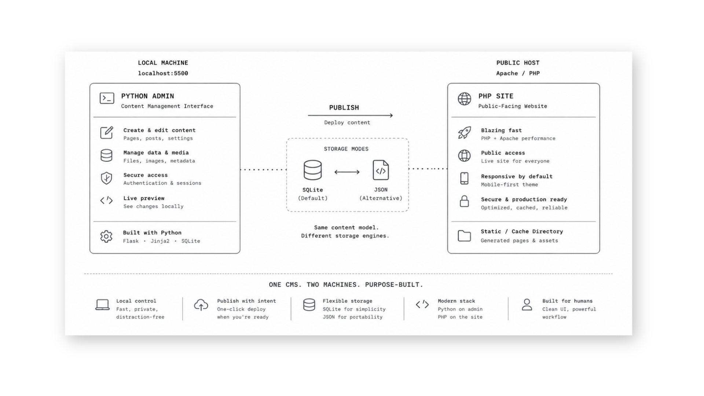
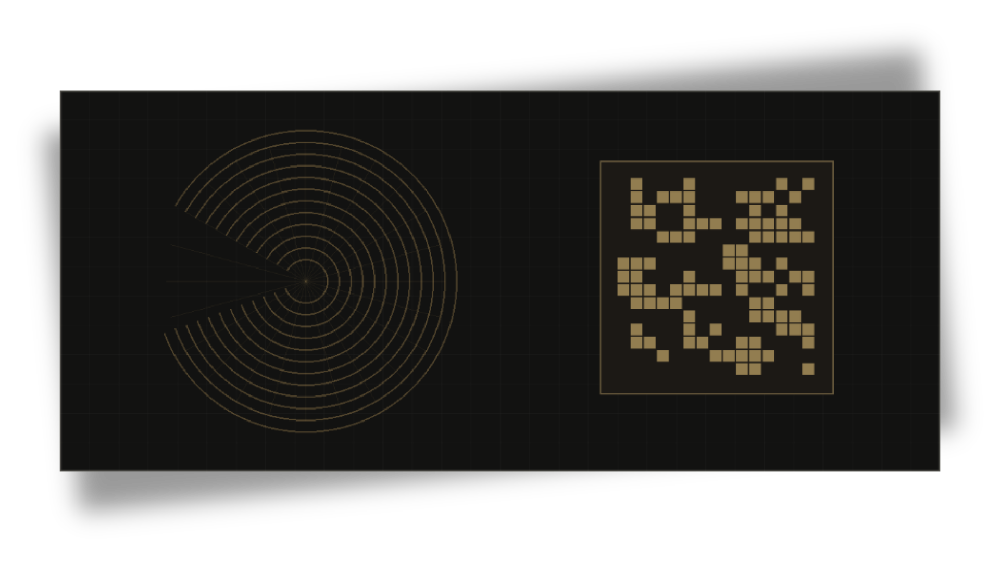
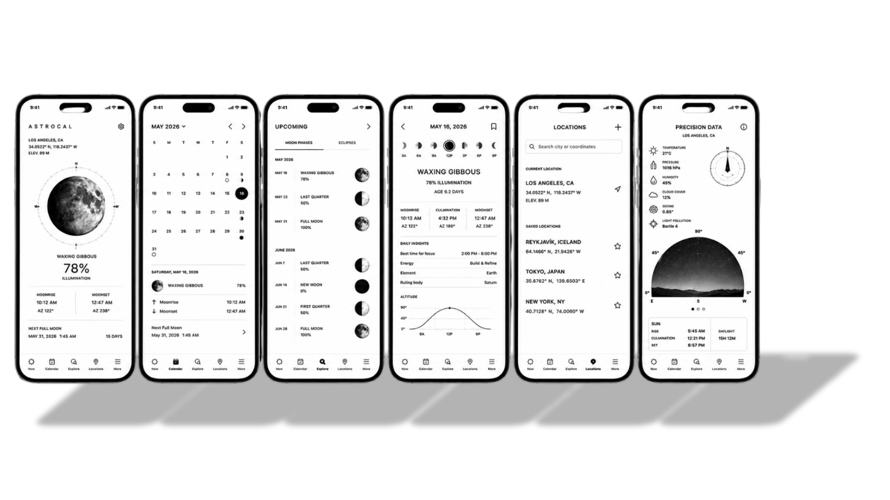
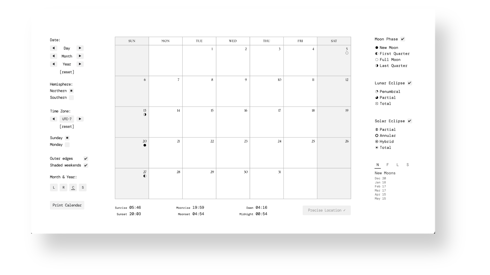
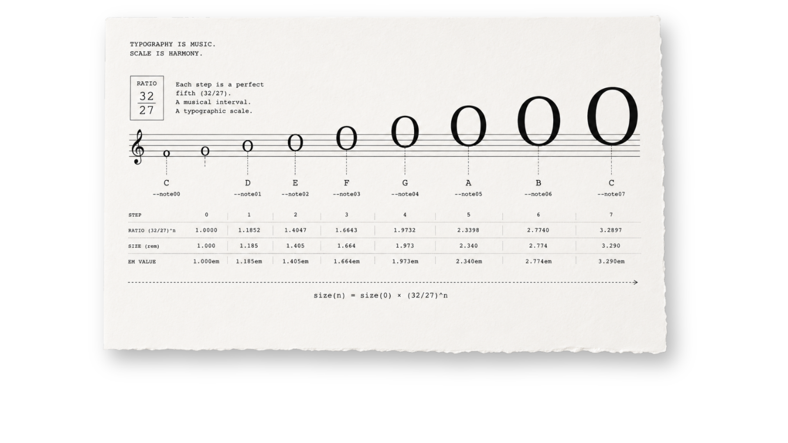

01
Custom CMS
A local-first publishing system built from scratch around a single operator.
Role-based access, content workflows, analytics, QR generation, and local-first admin.

Whether it’s synthesis, astronomy, publishing, typography, or cryptography, I ask the same questions: How does this system work? How can it be made more efficient? More beautiful?
A local-first publishing system built from scratch around a single operator.
Role-based access, content workflows, analytics, QR generation, and local-first admin.

A real-time synthesizer for learning sound, by making synthesis visible, understandable, and interactive.
Cross-platform synth with C++ DSP engine, Qt/QML interface, OSC, and FFT visualization.
Private audio objects for print.
A QR code that carries a private sharing and listening experience. End-to-end encryption, dynamic, no accounts or platforms.

The calendar, native on iOS and Android.
Parallel fault-tolerant calculation domains for moon phases, eclipses, and zmanim in a native cross-platform interface.

Precision in time, sky, and tradition.
Accurate moon phases, eclipses, zmanim, timezone conversion, and Astronomy Engine calculations.

Typography scaled by musical ratio.
A CSS system where musical intervals determine type scale, spacing, rhythm, and layout.
